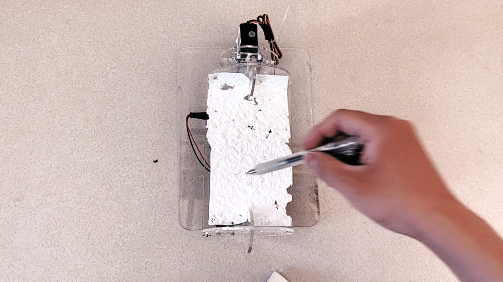
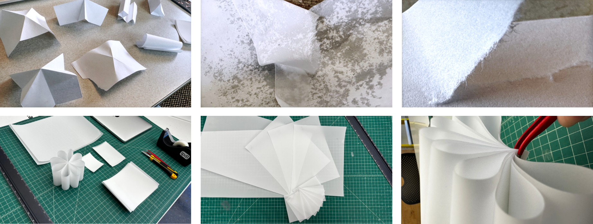
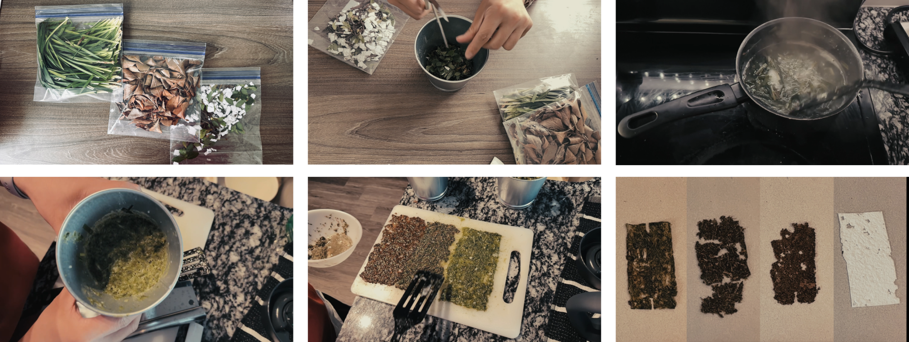
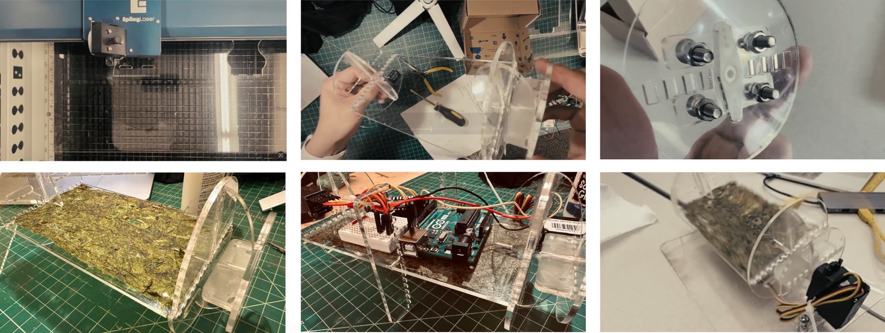
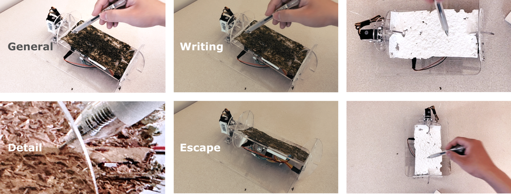
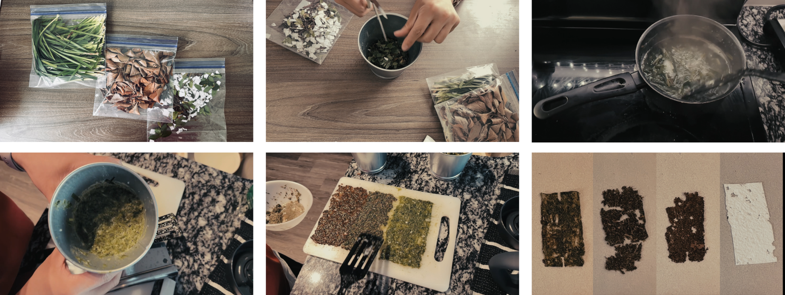
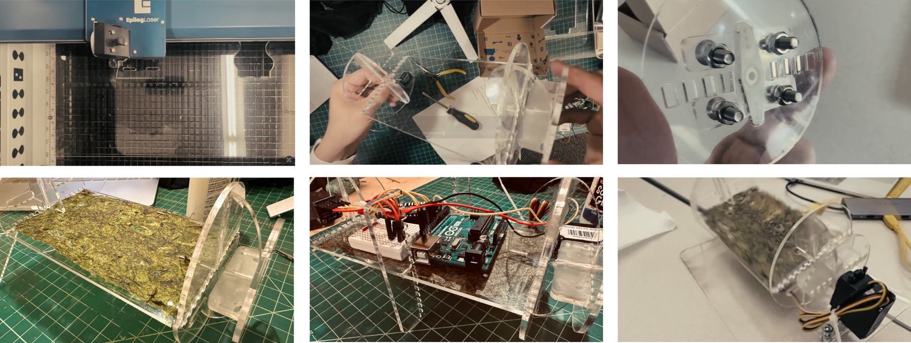
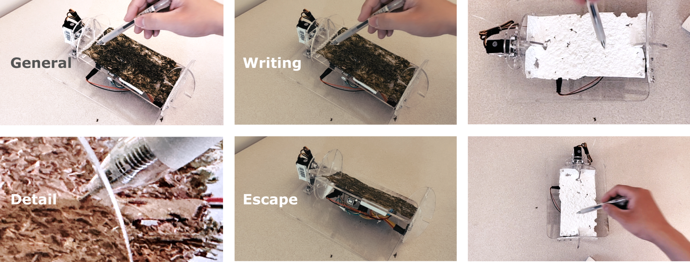

Introduction
Paper crafting tries to enact alternative intra-action between human and material through a reversed material agency. I made a actuating machine to escape paper from handwriting, and made different fiber papers to specify the agency differences on the “escape”. This newly enacted intra-action shows how people and material enact new performance under the new agency.

Paper crafting tries to enact alternative intra-action between human and material through a reversed material agency. I made a actuating machine to escape paper from handwriting, and made different fiber papers to specify the agency differences on the “escape”. This newly enacted intra-action shows how people and material enact new performance under the new agency.
Background & Discussion
Material has own agency. People ingrain their dexterity and understanding into material’s flow to enact making and sense-making in the real world. For example, Crafters makes fibers into paper for handwriting. Fibers’ robust, threaded or meshy structure makes it possible to be frictional. We apply writing into the friction within intervals to enact the cultural activity.
While material agency culturally enacts intra-action, human dismiss its existence. To enable a post-humanist perspective on material agency, we make paper escape from handwriting. During the practice under new agency, this reflective design enact a new intra-action between human and material.
Material Exploration
We divide the research and design process as 2 parts: Material exploration, and design for material agency.
To capture current material agency, we apply practice observation, self-anthropology through soma design, and critical making etc. These approaches help analyze how paper performs its agency culturally and physically.

Design for altering material agency



1. I designed the fiber paper of different materials with everyday tools for fabrication.
I designed and developed the betrayal machine - a physical prototype that could rotate the paper after detecting the handwriting.
I framed a new context to make people enact new performance


